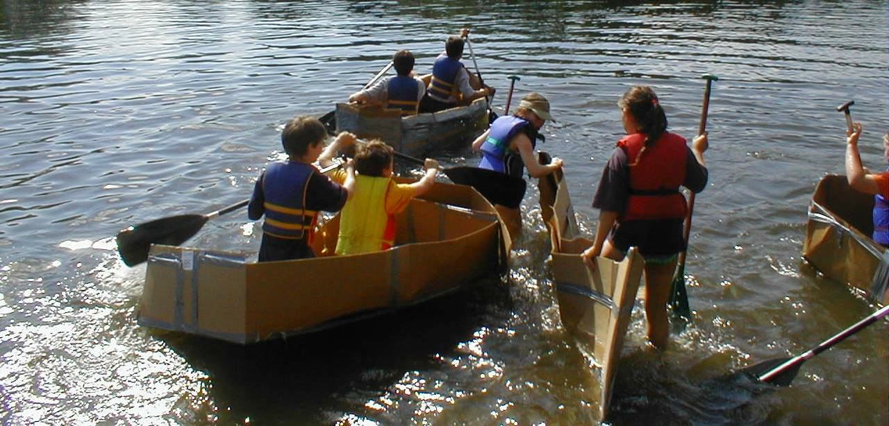

Special Events
Groton Greenway River Festival 2016
Sunday, June 19th 2016 at the Petapawag boat launch on Rt. 119 in Groton, MA
Come join us in a celebration of the Nashua River. Once again Nashoba Paddler will be offering free canoeing if you'd like to explore a different part of the river. All activities are free including environmental hands-on exhibits, live music, children's arts & crafts, and the famous cardboard canoe race! SEE MORE
Freedom's Way Hidden Treasures
Saturday, May 14th 2016
Nashoba Paddler will be joined by the Groton Greenway Committee to showcase the Nashua River, one of Groton's "hidden treasures". A self- guided paddle from Nashoba Paddler's rental base will allow you to explore at your own pace. The Groton Greenway Committee will share information about its efforts to protect the riverfronts of the Nashua River watershed and provide information about Fitch's Bridge. Mention Freedom's Way Hidden Treasures event to receive a 25% discount on rentals or to launch your own boat (launch fees and restrictions will be waived). SEE MORE